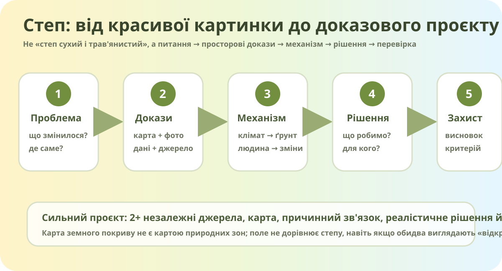

Що саме Ви доводите?

Реальне фото ковили в Єланецькому степу, Миколаївська область. Wikimedia Commons.

Де шукати степ?
OpenStreetMap показує об’єкти й землекористування, але не є картою природних зон. Це навмисно: треба зіставляти кілька джерел.
Три шари — три різні запитання
- Карта природних зон відповідає: де сформувався степовий природний комплекс?
- Земний покрив відповідає: що зараз реально вкриває поверхню — рілля, трава, ліс, забудова?
- Супутникові знімки допомагають перевірити конкретні ділянки й структуру ландшафту.
Три способи зробити не нудний проєкт
Трек A — «Степ, якого майже не видно»
Порівняйте природну зональність із сучасним земним покривом. Де природний степ заміщений ріллею? Які фрагменти могли зберегтися на схилах, балках, заповідних територіях?
Трек B — «Зелені терикони»
Візьміть порушену гірничими роботами ділянку. Чи будь-яке озеленення є відновленням степу? Які види, ґрунтові умови й ризики треба врахувати?
Трек C — «Лісопарк у степу: допомога чи підміна?»
Спроєктуйте зелену зону для міста степової частини України. Де потрібні дерева, а де логічніше зберегти лучно-степову рослинність?
Кейс: Єланецький степ
Природний заповідник «Єланецький степ» створено для збереження ландшафтів степової зони Правобережної України; після розширення у 2016 році його площа становить понад 3 тис. га. Міндовкілля називає його найбільшою ділянкою цілинного степу у Північно-Західному Причорномор’ї.
Офіційний матеріал МіндовкілляВикористовуйте кейс як доказ цінності збережених степових ділянок, а не як доказ стану всього Степу України.
Кейс: деградація земель
Степова зона особливо чутлива до посух, дефляції, ерозії, надмірного розорювання та порушень ґрунтового покриву. Для рішень важливо розрізняти охорону земель і відновлення природного степового оселища — це не одне й те саме.
Структура, яка не дає скотитися в реферат
45 секунд: без «ми знайшли в інтернеті»
Формула захисту: Ми стверджуємо… → це видно на… → пояснюємо це через… → тому пропонуємо… → успіх перевіримо за…
Методологічна дуель
Твердження: «Щоб відновити природу степової зони, треба посадити якомога більше дерев».
Рубрика проєкту
6/10
Доведіть проєкт до продукту
- Завершіть презентацію / постер / цифрову карту.
- Додайте активні посилання на 2+ джерела.
- Підпишіть карту й усі зображення.
- Сформулюйте висновок у 3–5 реченнях.
- Підготуйте 45-секундний захист.